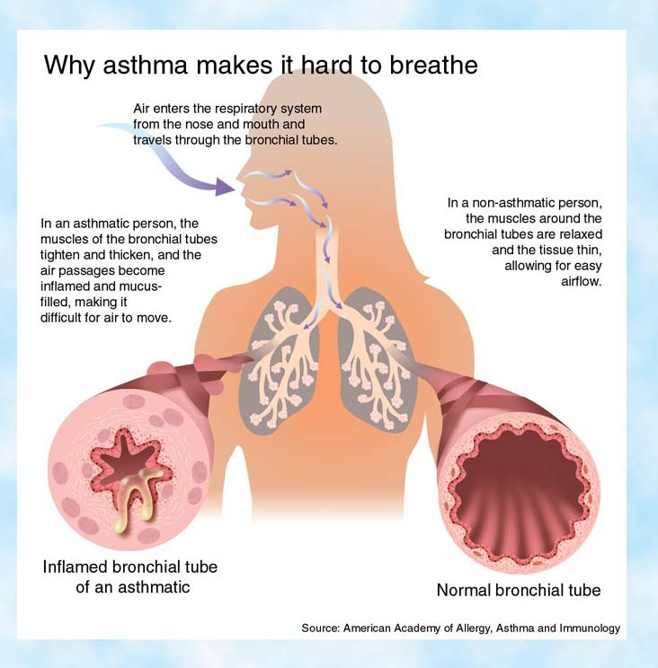

Review · Topic 2
Respiratory Diseases
Chronic Obstructive Pulmonary Disease (COPD)
For further study, see Med Surg I Week 1 – COPD.
COPD is emphysema, chronic bronchitis, or most often both. The problem is getting air out of the body, not getting it in.
Emphysema
- Alveolar damage. The alveoli are overinflated and stretched, and work less well.
- Impaired gas exchange at the alveoli.
Chronic Bronchitis
- Excessive secretion production is the key feature.
| Characteristic Feature | What to Know |
|---|---|
| Barrel chest | Increased anteroposterior diameter from hyperinflation. Closer to 1:1 than the expected 2:1. |
| Breath sounds | Decreased. Often wheezing, rales or rhonchi as well, especially in an exacerbation. |
| Prolonged expiration | Exhaling is not passive. The air has to be pushed out. |
| Pursed-lip breathing | Advanced disease. Compensatory: it creates positive pressure between the lips and the alveoli. |
| Neck vein distention, peripheral edema | Advanced disease. May indicate pulmonary hypertension, which makes blood back up. |
| Cachexia | Advanced disease. Excessively malnourished and extremely thin, because so many calories go to breathing. |
| Chest x-ray | Widened AP diameter, so the chest looks boxy, and a flattened diaphragm. |
Nursing Implications
- Smoking cessation: the single most effective and cost-effective intervention to reduce the risk of COPD and its progression.
- Inhaler therapy: the mainstay of self-management. Long-acting beta-agonists (the mainstay) and long-acting muscarinic antagonists bronchodilate. Inhaled corticosteroids reduce inflammation.
- Oxygen: target O2 sat 88 to 92%, lower than for the average patient.
- Positioning and breathing: tripod position, which opens up the thorax, and pursed-lip breathing.
Acute Exacerbation of COPD
Worsening of dyspnea, cough or sputum beyond the patient's typical day-to-day variation, requiring a change in the treatment plan. Most common cause: a respiratory infection, such as pneumonia on top of the COPD.
Management in Hospital
- Oxygen is the mainstay when hypoxemia is present. Keep SpO2 above 90%. Some providers accept 88%: the floor is provider preference.
- Noninvasive positive pressure ventilation, such as BiPAP, when hypercapnic.
- Bronchodilators by metered-dose inhaler or wet nebulizer.
- Chest physiotherapy, usually by respiratory therapy.
- Possibly antibiotics, if the cause is bacterial.
CO2 Narcosis and the CO2 Retainer
- Normal stimulus to breathe: an elevated CO2 level.
- CO2 retainer: after years of COPD the body has adapted to retained CO2, and a low oxygen level becomes the stimulus to breathe.
- CO2 narcosis: in theory, a high percentage of oxygen (6 L/min, saturating at 99%) takes away that drive to breathe.
Asthma
For further study, see Pediatrics Week 2 – Chronic Respiratory.
Chronic inflammatory airway disorder, also called reactive airway disease.
Pathophysiology
- Type 1 hypersensitivity immune response, IgE mediated.
- Mast cells release histamine and leukotrienes. Result: diffuse obstructive and restrictive airway disease.
- Three causes of the narrowing: inflammation and edema of the mucous membranes, tenacious secretions from the mucous glands, and spasm of the bronchial smooth muscle.

Signs and Symptoms
- Dyspnea: inflammation, bronchoconstriction and mucus narrow the airway and raise airway resistance.
- Expiratory wheezing: turbulent airflow through narrowed bronchioles during expiration, when airways naturally become smaller.
- Cough: irritation and mucus stimulate the cough receptors. Hacking and nonproductive at onset, from early bronchospasm. Later rattling and productive of clear sputum, as mucus production rises.
- Prolonged expiratory phase: bronchoconstriction delays airflow out of the lungs.
- Respiratory distress: nasal flaring, cyanosis, intercostal retractions. Severe airway obstruction leads to hypoxia and accessory muscle use.
Peak Expiratory Flow Rate (PEFR)
Three zones interpret the PEFR. Each is a percent of the personal best, established over 2 to 3 weeks while the asthma is stable.
| Zone | Percent of Personal Best | What to Do |
|---|---|---|
| Green | 80 to 100% | Probably okay. Continue activities and controller medication. No rescue medication needed. |
| Yellow | 50 to 79% | Take the rescue medication, a bronchodilator. Continue controller medication. |
| Red | Below 50% | Take the bronchodilator immediately, then seek emergency care. |
Management
Trigger Control
- Triggers: pollen, exercise, cold air, pets, stress, anger, pollution, strong odors, smoke, dust, chemical fumes, bugs in the home, fungus spores.
- Eliminating the triggers is a main way of controlling asthma. Secondhand smoke is a big one.
Controllers (Preventer Medications)
- Corticosteroids: inhaled beclomethasone, budesonide and fluticasone, and prednisone. The inhaled ones can cause thrush, so rinse the mouth after each dose.
- Long-acting beta-2 agonists: salmeterol, and fluticasone with salmeterol. Added when the inhaled corticosteroid alone does not control the asthma. Not for acute episodes.
- Leukotriene inhibitor: montelukast. Helps with the mucus and the edema.
- Mast cell stabilizer: cromolyn.
Relievers (Rescue Medications)
- Short-acting beta-2 agonists (bronchodilators): albuterol, levalbuterol. For wheezing or coughing on the spot.
- Side effects: nausea, shakiness, anxiety, tachycardia, tachypnea.
- Magnesium sulfate: in the ED or ICU, for moderate to severe asthma. Relaxes the muscles, decreases inflammation, and improves pulmonary function and peak flow.
Asthma Exacerbation
Progressively worsening shortness of breath, cough, wheezing or chest tightness, alone or in combination.
What Happens in the Airways
- Air is trapped behind airways narrowed or occluded by bronchospasm, mucosal edema and mucus plugging.
- Hyperinflation: functional residual capacity rises. It keeps the airways open and permits gas exchange.
- Hypoxemia from the mismatch of ventilation and perfusion: carbon dioxide tension rises and oxygen tension falls.
Nursing Interventions
- High Fowler's: upright for maximum chest expansion.
- Oxygen: supplemental as needed, with continuous pulse oximetry.
- Control panic with a calm approach. Sit beside the patient and breathe together, using the diaphragm to pull air in and expel it.
- Rescue drugs: usually by nebulizer, sometimes continuously for a while. Then transition to the regular medications.
Pneumonia
For further study, see Med Surg I Week 1 – Pneumonia.
Acute infection of the lung parenchyma. Secretions that sit in the lower lungs are the perfect breeding ground, so a patient who cannot expectorate them is at risk.
Community-Acquired Pneumonia (CAP)
- Patient has not been hospitalized or lived in a long-term care facility within 14 days of the onset of symptoms.
Hospital-Acquired Pneumonia (HAP)
- Begins 48 hours or longer after admission, and was not present at admission.
- In non-intubated patients.
- Ventilator-associated pneumonia (VAP): the type of HAP in an intubated patient.
| Type | What to Know |
|---|---|
| Viral |
|
| Bacterial |
|
| Aspiration |
|
| Opportunistic |
|
Clinical Manifestations
- Fever, chills, cough, malaise, dyspnea, fatigue, myalgia.
- Chest pain with inspiration and coughing, so the patient avoids deep breaths.
- Elderly: new-onset confusion. Often one of the first signs of any infection.
- Severe cases: respiratory distress, then respiratory failure.
| Diagnostic Test | Finding in Pneumonia |
|---|---|
| Chest x-ray |
|
| WBC with differential |
|
| Sputum culture and sensitivity (C&S) |
|
Acute Interventions
- Oxygen: supplemental as ordered, to keep the pulse oximetry above 95%.
- Secretions: pulmonary toilet and chest physiotherapy, to loosen them so the patient can expectorate them.
- Increase fluids (IV or PO) to thin the secretions, unless contraindicated, as in severe heart failure.
- Ambulation, with energy conservation: bundle the care, and still get the patient up and moving.
- Drug therapy: antibiotics if bacterial, analgesics for pleuritic pain, antipyretics for fever.
Venous Thromboembolism (VTE)
For further study, see Fundamentals II Week 2 – Cardiovascular, Med Surg II Week 2 – Chronic Venous Insufficiency and Med Surg I Week 3 – Post-op.
VTE is DVT and PE together. A deep vein thrombus is a stationary clot, most often in the legs. The danger is the clot dislodging, traveling to the lungs and wedging there as a pulmonary embolism, which can kill.
Who Is at Risk
| Risk Factor | What It Means | Seen With |
|---|---|---|
| Venous stasis | Blood pooling in the veins. |
|
| Endothelial damage | Damage to the lining of the vessels. |
|
| Hypercoagulability | Thickened blood. |
|
A history of DVT or VTE puts the patient at higher risk of another.
Preventing DVT and PE
| Measure | What to Know |
|---|---|
| Early ambulation |
|
| Leg exercises |
|
| Sequential compression devices (SCDs) |
|
| TED hose |
|
| Hydration |
|
| Anticoagulation |
|
| IVC filter (Greenfield filter) |
|